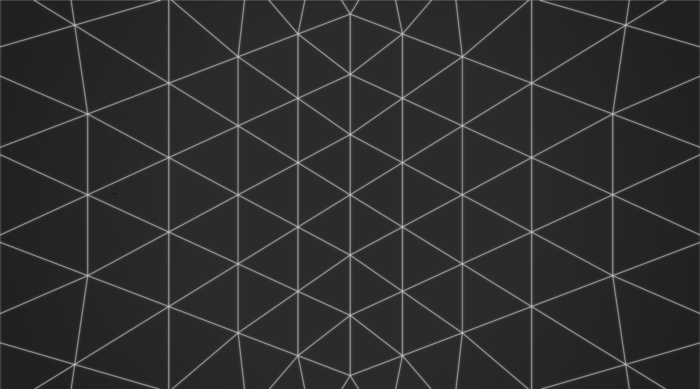
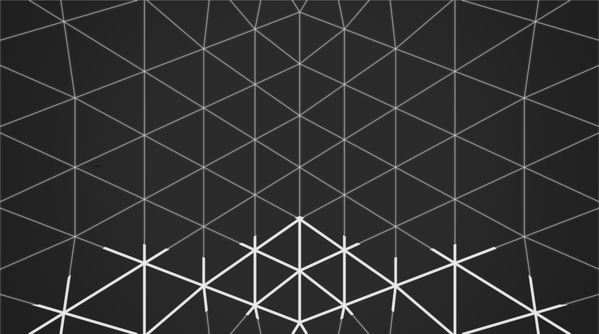

Storyboard
A dark screen
- A blink of light, and a webpage loads.
- Wikipedia. Floating in a virtual viewport in front of user. An article
- History of astronomy. "We used to think earth was center of universe."
- "Our understanding changed".
- Another webpage loads.
- An old news broadcast on the beginnings of the internet...
- Another webpage. Steve Jobs introducing iPhone. "The internet in your pocket".
- ...Fade to black
A blinking prompt
- http://www.thefutureoftheweb.com
- Press _Enter_
- Blink... GO...
- Glitches and pops and loading and pulsing and movement _into_ the web.
- "2D" becomes "3D". "Page" becomes "World".
A stage takes form
- Structure emerges from chaos...
- Wireframes resolve, white on black. Like the holodeck.
- A stage forms, and holds... Pulsing, doing something... Loading...



A transition
- The edges of the stage peel apart, fragment, flaking away...
- Like a cocoon disolving...
- Revealing something beyond...
A world
- "Whoa" moment... The first time we have ever seen the VR web...
- We are standing in a great wide open world...
- We are looking around... it is 3D, immersive. Sounds echo in the distance.
- There is movement, and life. Clouds, water ripples, birds...
- Music can be heard faintly...
First footsteps
- We look, and the world responds (eg plants grow where our gaze falls)
- We touch, and the world responds (eg ripples on water where we click)
- We lean forward, and we fly...
- Skimming over the surface of the land... flying over water, then land...
- Feeling the sensation of movement, and taking in the beauty...
Discovery
- A light in the distance...
- We move towards it...
- It draws nearer, and is revealed to be a doorwawy. A portal...
- We step into it...
Transported
- The world distorts and ripples
- We are aware of whooshing through space
- The old world falls away
- And a new one resolves
Exploring the next world
- _TODO: design this world_
Jumping back to the previous world
- We step back towards the portal that brought up to this world. _TODO: interaction specifics._
- We warp back into the landing world...
Night time
- We are standing in moonlight...
- The time of day has changed while we were through the portal... It is nighttime now. A moon is overhead. It casts a white blue light over the landscape and ripples on the water...
- Another light is visible in the distance...
- We move towards it...
We discover another portal
We step through it, into another world
Exploring this world
- _TODO: design this world_
Jumping back to the previous world
- We step back towards the portal that brought up to this world. _TODO: interaction specifics._
- We warp back into the landing world...
Another light in the distance
- We are standing in the rain...
- It is daytime again, but fog and rain surrounds us...
- Another light is visible in the distance...
- We move towards it...
We discover another portal
We step through it, into another world
Exploring this world
- li _TODO: design this world_
Jumping back to the previous world
- We step back towards the portal that brought up to this world. _TODO: interaction specifics._
- We warp back into the landing world...
A voice
- A presence tells us we have discovered all three worlds
- The presence makes itself known... Introduces itself...
- It joins us! This is how we get our HUD.
- _TODO: specifics_
Trying out the HUD
- The HUD lets us do _TODO_
- We try it out for the first time...
- We tap on a bookmark...
- The world shimmers, and we are transported...


{kind=link}
{kind=link}
{kind=link}
{kind=link}
{kind=link}
{kind=link}